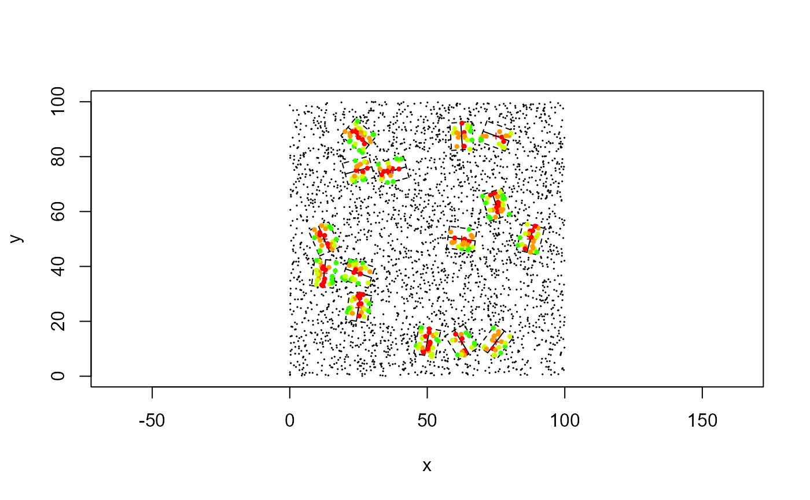

transectSample.RdCreate linear transects with random rotation or user defined rotation and centered in a set of given points and length. Returns all points at a detection range from transect line and the orthogonal distance to the transect.
transectSample(sites, occ, tlen, drng, angle="random")Center location (x, y) for each transect centroid (in rows).
Set of points (x,y) for each individual observed.
Total length of the transect.
Detection range for each side of the transect.
Type of angle strategy. Either 'random' (default) to get a random angle at each point, or a vector with same number of locations in 'pos', defining an angle for each location.
Return a list with distance Returns a list with a matrix with occ (rows) x sites (cols) with values of the orthogonal distance to the transect if detected, otherwise NA. It also contains a 'transect' list with x and y coordinates for the points of the transect and detection rectangle. x and y columns correspond to coordinates for the topleft, start, bottomleft, bottomright, end and topright points.
set.seed(1234)
#Create sampling sites with ecoforge::uniformSamp() function
sampling <- randomSamp(15, c(0,100), c(0,100), 25)
#Generate random species occurrences
sp <- data.frame(x = runif(3000, 0, 100), y = runif(3000, 0, 100))
#Create transect sampling units
tlength <- 10
drng <- 4
transect <- transectSample(sampling, sp, tlength, drng)
plot(sp, cex=0.1, asp=1)
points(sampling, cex=0.5, pch=3, col='red')
for (i in 1:nrow(sampling)) {
pnts <- transect$transect
lines(pnts$x[i, c(2,5)], pnts$y[i, c(2,5)])
polygon(pnts$x[i,], pnts$y[i,], lty=2)
d <- transect$distance[,i]
msk <- !is.na(d)
col <- as.integer(cut(d[msk], seq(0, drng, length.out=5)))
points(sp[msk,], pch=16, cex=0.6, col=rainbow(10)[col])
set.seed(1234)
}
